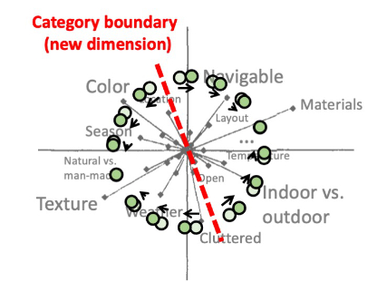
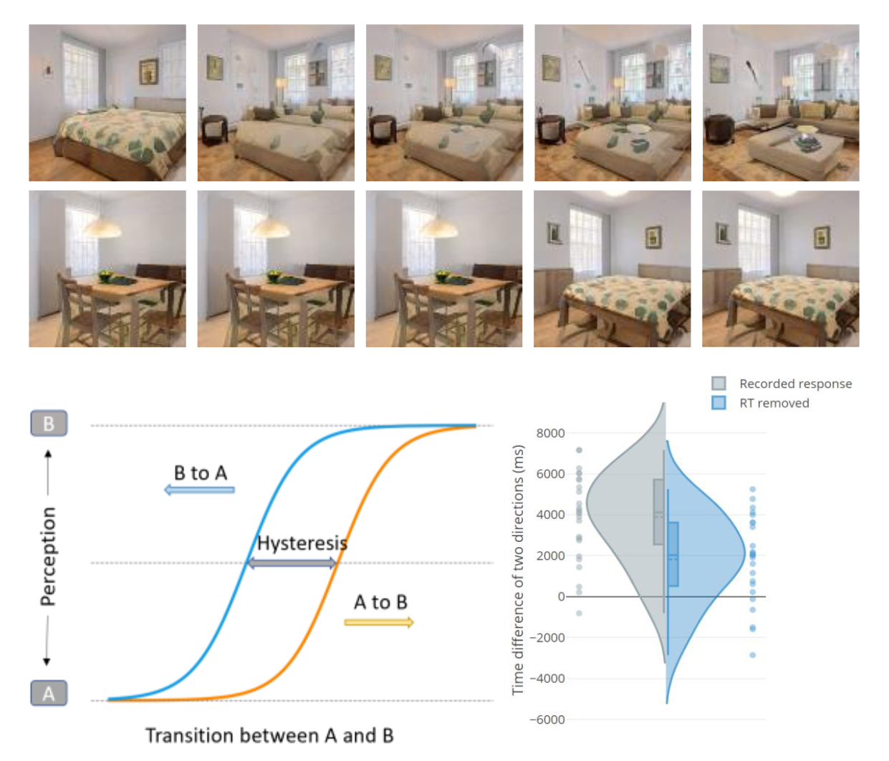

Scene space
General direction
Our cognitive system represents real-world scenes in the high-dimensional representational space. This space consists of numerous psychological dimensions that correspond to various attributes of the scenes, such as colors, materials, layout, category, and many higher-level semantic features. My recent main research explores the nature of this representational space leveraging Generative Adversarial Networks (GANs). The basic algorithm of GANs is to simulate the underlying probabilistic density distribution of a large dataset to generate fake data with comparable quality to the real data. An important point here is that the successfully learned distribution contains numerous dimensions similar to the psychological dimensions in human minds, and thus we can control the scene attributes using GANs as tightly as possible by sampling the vectors from its learned distribution. Currently, I am applying this technique to various psychophysics studies that were restricted to the non-realistic simple stimulus domain (e.g. orientations, colors, size of simple shapes) which was utilized only due to their high controllability. By expanding the psychophysics to the real-world scene domain, we will be able to achieve a better understanding of human behavior and cognition in ecologically valid settings.
Sub-projects
Precisely characterizing mental representations of visual experiences requires careful control of experimental stimuli. Recent work leveraging such stimulus control has led to important insights; however, these findings are constrained to simple visual properties like colour and line orientation. There remains a critical methodological barrier to characterizing perceptual and mnemonic representations of realistic visual experiences. Here, we introduce a novel method to systematically control visual properties of natural scene stimuli. Using generative adversarial networks (GAN), a state-of-art deep learning technique for creating highly realistic synthetic images, we generated scene wheels in which continuously changing visual properties smoothly transition between meaningful realistic scenes. To validate the efficacy of scene wheels, we conducted two behavioral experiments that assess perceptual and mnemonic representations attained from the scene wheels. In the perceptual validation experiment, we tested whether the continuous transition of scene images along the wheel is reflected in human perceptual similarity judgment. The perceived similarity of the scene images correspondingly decreased as distances between the images increase on the wheel. In the memory experiment, participants reconstructed to-be-remembered scenes from the scene wheels. Reconstruction errors for these scenes resemble error distributions observed in prior studies using simple stimulus properties. Importantly, perceptual similarity judgment and memory precision varied systematically with scene wheel radius. These findings suggest our novel approach offers a window into the mental representations of naturalistic visual experiences.

Cateogory biases of real-world scene
In daily life, we experience complex visual environments in which numerous visual properties are tightly woven into holistic dimensions. Our visual system warps and compresses this visual input across its multiple stages of operations to arrive at perceptual insights that link to conceptual knowledge. Compelling demonstrations in object perception suggest high-level cognitive functions like categorization can impact how visual processing unfolds to, for example, distinctly biases or distort perception along category-relevant stimulus dimensions. However, whether or not such categorical perception mechanisms similarly impact the perception of real-world scenes remains an important open question. Here, we address this question in a novel learning task in which participants learned to categorize realistic scene images synthesized from an image space defined by continuously varying holistic visual properties. First, participants learned an arbitrary linear category boundary that divided scene space through feedback-based learning. Next, participants completed a visual working memory estimation task in which a target scene was briefly presented, then after a brief delay reconstructed from the continuous scene space. Memory reconstruction errors revealed systematic biases that tracked the subjective nature of each participant’s category learning. Specifically, errors were selectively biased along the diagnostic dimensions defined by participants’ acquired category boundaries. In other words, after only a short category learning session, scenes were remembered as being more similar to their respective learned categories at the expense of their veridical details. These results suggest that our visual system extracts diagnostic dimensions that optimize top-down task goals and actively leverages them for subsequent perception and memory. The highly complex and realistic nature of our stimulus space highlights the dynamic nature of visual perception and high-level cognition in an ecologically valid setting.

Scene Hysteresis
Perceptual categorization is a fundamental task in the human vision system. Although categorical judgements made by humans usually achieve high accuracy, many studies have suggested that human perception is dependent on perceptual history such that categorical judgements are influenced and not consistent in some situations. Categorization on ambiguous stimuli is a good way of studying this phenomenon. Here we are interested in the categorization of ambiguous scene images in continuous transitions between scene categories. We created synthesized in-door scene images based on three categories: bedroom, living room and dining room. Participants were shown sequences of scene images that smoothly changed from one category to another and were asked to respond when they perceived a change in category. Each sequence was shown in two directions such that both transitions from category A to B and B to A were presented, and the differences in the categorical responses in the two directions were compared. Participants were also shown sequences of abrupt changes with sudden shifts between categories, and these responses were used to estimate response time. We predicted the perception of scene category to be biased toward the starting category in a transition. Our results confirm this prediction: participants’ perception in the two directions for the same transition was different such that the perceived category change was delayed, and the ambiguous scene images tended to be categorized as the starting category of a transition, thus giving rise to a perceptual hysteresis. This study found evidence that the same stimuli can be interpreted in different ways for categorical judgement. During a dynamic change of stimuli, the human visual system tends to persist in the current interpretation when resolving ambiguities. This implies that in scene perception, instead of a tendency to shift the perception, a stable perception is preferred by the human visual system in dynamically changing environments.